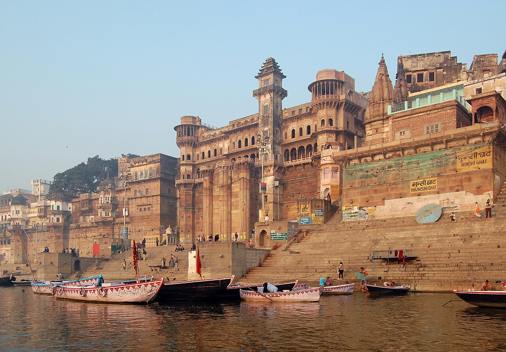

Perched majestically upon the highest natural bluff along the northern crescent of the Ganges, the Alamgir Mosque—known locally among older residents as Beni Madhav ka Darera—is an unmistakable landmark of Varanasi’s riverfront skyline. Built in the late seventeenth century during the reign of Mughal Emperor Aurangzeb (who took the regnal title Alamgir, "Conqueror of the World"), the structure commands breathtaking panoramas over the sacred waters.
Layers of History: From Bindu Madhava to Mughal Citadel
The site upon which the mosque stands has been of paramount religious importance for over a millennium. Historically, this prominent promontory overlooked Panchganga Ghat, the mythical confluence of five holy rivers (the Ganga, Yamuna, Saraswati, Kirana, and Dhutpapa). Here stood the monumental tenth-century Vishnu temple of Bindu Madhava, celebrated in Sanskrit literature as one of the architectural marvels of medieval Kashi.
In 1673 CE, under imperial orders from Emperor Aurangzeb, the ancient Vishnu temple was dismantled, and the present Friday mosque was constructed atop its enormous stone foundations. Rather than obliterating the preceding architecture, the Mughal engineers incorporated the existing sandstone retaining bastions, octagonal foundation piers, and stone retaining walls into the mosque's elevated terrace, creating a visually striking layered monument that embodies the complex historical strata of the city.
Key Historical Facts
- Commissioned By: Mughal Emperor Muhi-ud-Din Muhammad Aurangzeb (Alamgir I) in 1673 CE
- Historic Site: Built upon the terrace of the historic 10th-century Bindu Madhava temple
- Location: Perched over Panchganga Ghat on the northern sector of the ghat crescent
- Architectural Features: Three ribbed Mughal domes, cusped stone arches, high terrace balustrades
- Lost Minarets: Historically featured two 50-meter slender minarets that defined the river skyline until structural instability led to their dismantling in the 19th and mid-20th centuries
Architectural Grandeur & The Fabled Slender Minarets
The mosque is constructed of fine pale sandstone, harmonizing subtly with the river stones below. The prayer hall features three ribbed central domes and eight slender kiosks (chhatris) flanking the roof parapet. The central facade is pierced by five elegant cusped arches that open onto a stone courtyard paved with slabs providing panoramic vistas across the eastern floodplains.
Throughout the eighteenth and nineteenth centuries, European artists including Thomas and William Daniell, James Prinsep, and Mark Twain sketched and wrote about the mosque's breathtaking twin minarets. Rising over fifty meters above the already elevated terrace, these slender octagonal towers could be seen from miles away across the Gangetic plain. However, seasonal flooding and erosion of the underlying riverbed weakened their foundations; the southern minaret partially collapsed in 1893, and the northern minaret was dismantled by municipal authorities in 1948 to safeguard surrounding residential quarters.


Panchganga Ghat & Syncretic Heritage
Directly beneath the mosque lies Panchganga Ghat, one of the five sacred pilgrimage bathing sites (Panchatirthi) of Varanasi. During the Hindu holy month of Kartik, residents hang wicker baskets containing small flickering oil lamps (aakash deep) from tall bamboo poles erected on the stone terraces below the mosque, illuminating the riverfront in honor of ancestors.
The area surrounding the mosque is historically revered as the meditation quarter of Saint Ramananda (teacher of Kabir) and the philosopher Tailang Swami. Today, the call to prayer (adhan) resonates five times daily from the terrace of Alamgir Mosque, mingling gracefully with temple bells and conch shells from adjacent shrines—a living acoustic testament to Varanasi's deep and enduring pluralism.
Visitor Information & Guidelines
- Visiting Hours
- Open for visitors during non-prayer daylight hours (typically 07:00 to 12:00, and 14:00 to 17:00). Closed to tourists during Friday congregational Jummah prayers.
- Dress Code & Etiquette
- Modest attire is required (covered shoulders, arms, and knees). Visitors must remove footwear before entering the courtyard and prayer platform.
- Panoramic Views
- The open stone terrace provides one of the single finest high-angle photographic vantage points looking south across the sweeping crescent of the Ganges ghats.
- Access
- Reached on foot by walking north along the ghats from Manikarnika (approx. 15 minutes) or navigating the quiet medieval alleys of the Pacca Mahal district.
Photography Advice: The morning light from across the river illuminates the pale stone facade in warm golden shades, making sunrise boat excursions the premier photographic vantage point.